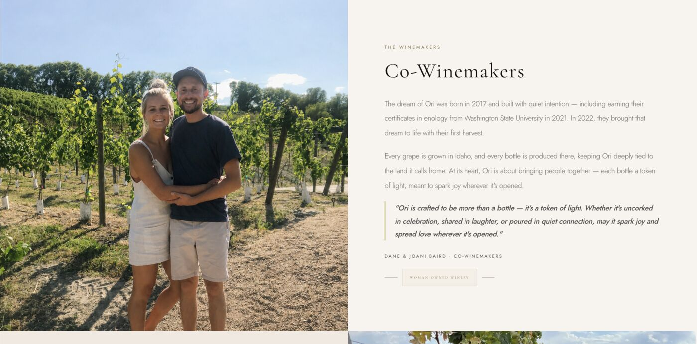
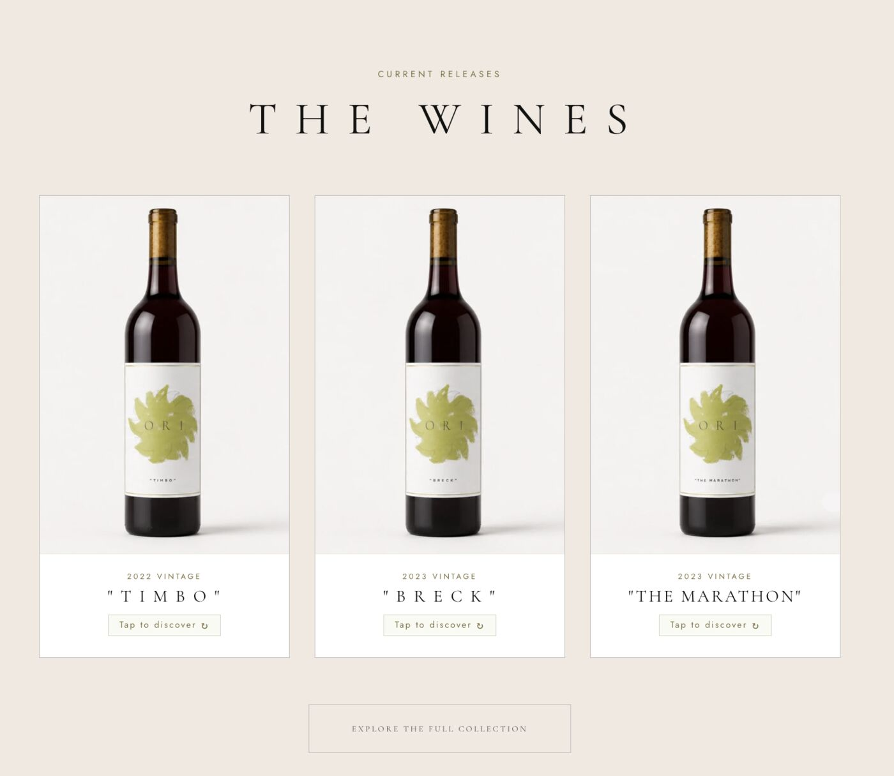

Food & Beverage · Winery
Ori Wines
A full identity and launch site, ready before Ori's very first bottle shipped.

The One Thing
A wine that had never been sold to the public still had to look like it had earned its place on the shelf.
Ori is co-owned and made by Dane and Joani Baird, who earned their enology certificates from Washington State University in 2021 and brought in their first harvest in 2022 — every grape grown and every bottle produced in Idaho. The catch: the identity had to launch before Ori's first public sale, which meant it couldn't lean on years of reputation the way an established winery can. It had to do that credibility work itself, on day one.
So the label system, photography direction, and site were built to read as established and considered from the very first release — Timbo, Breck, and The Marathon — rather than like a first-time project finding its footing in public. The founders' wine club gave early fans a reason to commit before the first bottle even shipped.

Dane and Joani Baird, Ori's co-winemakers, in the vineyard that grows every bottle.

Timbo, Breck, and The Marathon — the releases the identity had to carry.
See It In Action
The live site, scrolled top to bottom — label system and story in motion.
The biggest thing for us was that they didn't make us start over. They took all of our existing systems and built a site around them that finally feels like our brand. Everything just works better now.
DaneOri Wines
Outcome
Launched on schedule, ahead of Ori's very first public sale.
A woman-owned winery with a real story, given a brand that could carry it from day one.
Book a Free Brand Call →